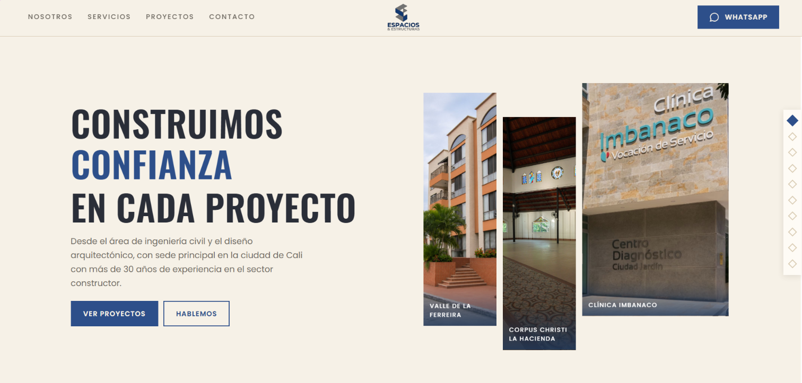
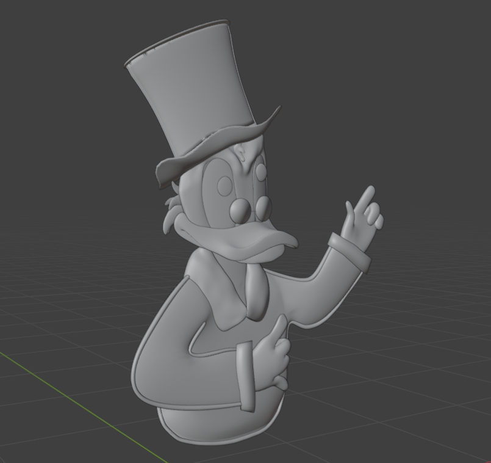
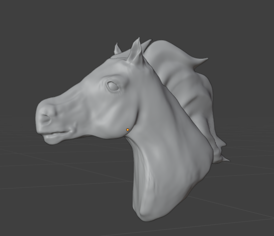
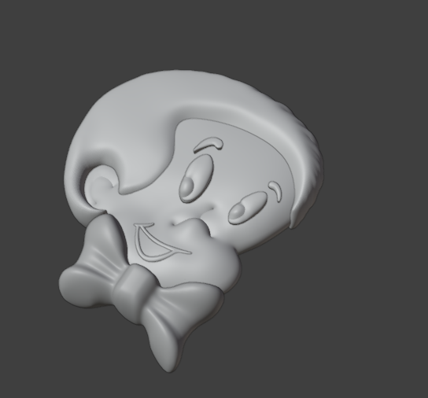
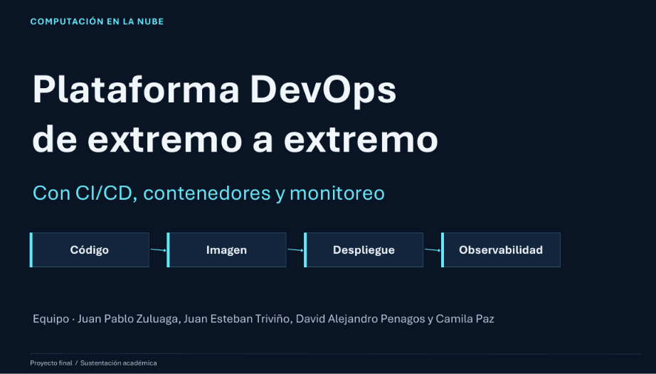
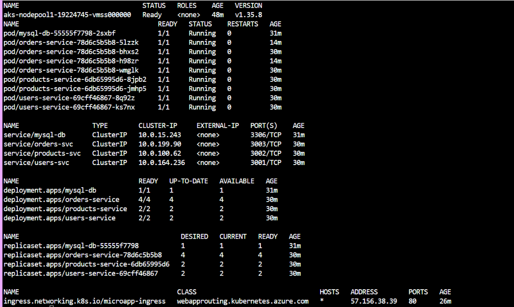
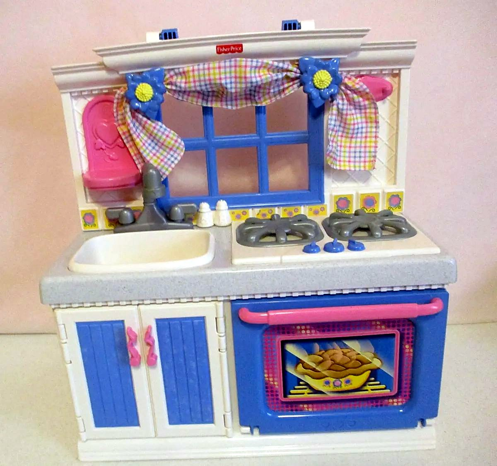
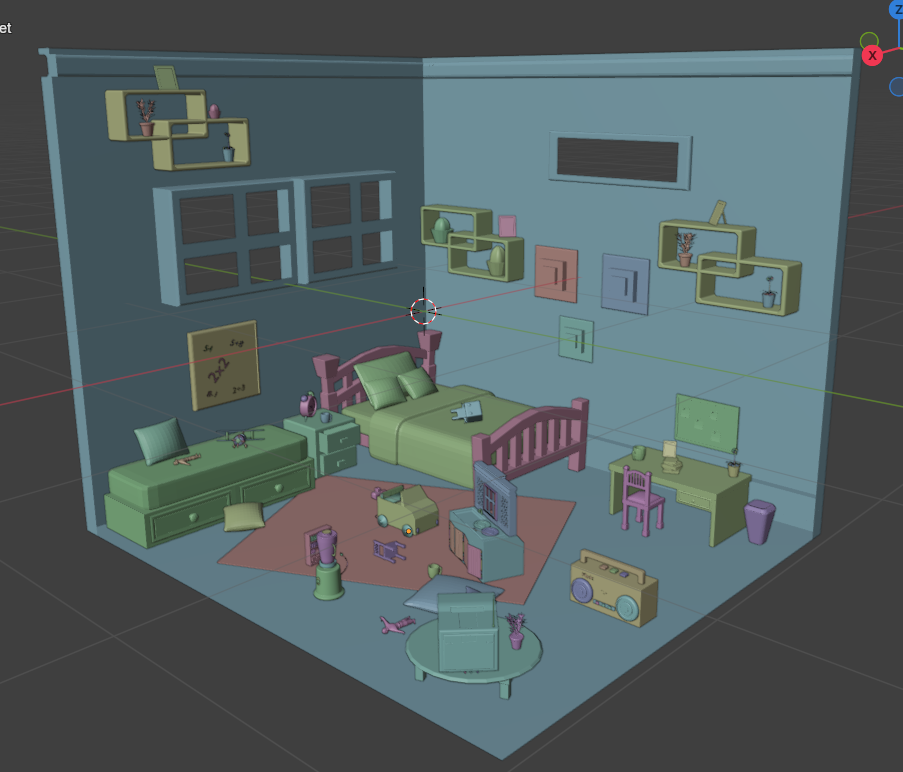

Hola, soy Camila y transformo ideas en experiencias digitales.
Estudiante de Ingeniería Multimedia enfocada en el desarrollo web, experiencias interactivas, modelado 3D, inteligencia artificial y computación en la nube. Explora algunos de los proyectos que han marcado mi crecimiento profesional.
Estudiante de Ingeniería Multimedia (9° semestre) con formación técnica en
programación de software. Experiencia en desarrollo web, modelado 3D y aplicaciones
con inteligencia artificial y sistemas embebidos, por lo que he participado en proyectos como
detección de huecos y basura mediante visión computacional, y una aplicación web para
visualización de rines en 3D con realidad aumentada. También he trabajado en la nube con
contenedores (Docker), Kubernetes e integración continua con GitHub Actions. Tengo experiencia con lenguajes
de programación como Python, Java, C# y JavaScript, además de HTML, CSS y WordPress para desarrollo web, y con herramientas
como Unity, Blender y Adobe Suite. Estoy interesada en aplicar mis conocimientos en una empresa donde
pueda aportar soluciones tecnológicas innovadoras.
Estudiante de Ingeniería Multimedia (9.º semestre) con formación técnica en programación. He trabajado en desarrollo web, modelado 3D, inteligencia artificial y sistemas embebidos: detección de huecos y basura con visión computacional y una aplicación web de rines en 3D con realidad aumentada. También trabajo en la nube con Docker, Kubernetes y GitHub Actions. Tengo experiencia con lenguajes de programación como Python, Java, C# y JavaScript, además de HTML, CSS y WordPress para desarrollo web, y con herramientas como Unity, Blender y Adobe Suite. Busco una empresa donde aportar soluciones tecnológicas innovadoras.
10+herramientas de trabajo
4proyectos freelance entregados
// HABILIDADES
Modelado 3D y realidad aumentada
Blender · Visor de RA en la web
Videojuegos
Unity · C# · Mecánicas e interacción
Desarrollo web
HTML · CSS · JavaScript · Node.js · WordPress
Nube y DevOps
Docker · Kubernetes · Integración continua
IA y sistemas embebidos
CNN · YOLO · TinyML
Datos y bases de datos
MySQL · Azure SQL · Inteligencia de negocios (en formación)
02 — proyectos
Mi tablero de proyectos
Destacado
Web · RA · Freelance
Rines en 3D con realidad aumentada
Aplicación web desarrollada para un cliente que fabrica rines. Permite visualizar dos rines en 3D y personalizarlos con los colores y efectos diamantados disponibles en la empresa, con un visor de realidad aumentada integrado en HTML para ver cómo quedarían en la vida real.
Destacado

Web · Freelance
Espacios & Estructuras
Página web tipo presentación interactiva para una empresa de ingeniería civil y arquitectura de Cali, pensada para exponer sus proyectos sobre todo desde el celular. Paleta beige con los azules del logo, publicada en GitHub Pages.
QR fijo para las mesas, con logos y mensaje de bienvenida, que lleva a la carta de precios.



3D · Freelance
Modelos 3D por encargo
Tres figuras modeladas en Blender para un cliente externo: Tío Rico, un caballo y Piolín.
Destacado

Nube · DevOps
Plataforma DevOps con CI/CD (Trabajo grupal)
Plataforma DevOps de extremo a extremo con integración continua en GitHub Actions, ramas protegidas, contenedores y monitoreo, trabajada en un equipo de 4. Mi parte fue la integración continua y la comparación de tiempos entre el proceso manual y el automatizado.
Ecos del Origen: Territorio Misak (Trabajo grupal)
Videojuego en equipo para tablet con narrativa cultural del pueblo Misak. Desarrollé la mecánica de batir hierbas moviendo el celular y el tejido de la mochila wasr del Nivel 2, y preparé las imágenes del Nivel 3.
Procesamiento de imágenes + CNN
Detección de huecos y basura (Trabajo grupal)
SafeRoute es una aplicación web que permite clasificar el estado de una calle (Calle Buena, Grietas o Huecos) mediante una red neuronal CNN y detectar anomalías con un modelo YOLO.
Nube · Docker · Consul
Micro Proyecto 1: microservicios (Trabajo grupal)
Sitio de administración de usuarios, productos y órdenes de compra. Completé el microservicio de órdenes con persistencia desacoplada, empaqueté los servicios con Docker y Docker Compose, y usé Consul para el descubrimiento dinámico de servicios.
Tres sistemas embebidos con TinyML aplicados a terapia y asistencia. El primero reconoce gestos en el aire con un Arduino y sensores inerciales para entrenar motricidad; el segundo, R-Speech, evalúa la pronunciación de la letra "R" mediante reconocimiento de voz; el tercero, SmartVision, usa visión artificial en una Raspberry Pi para asistir a personas con discapacidad visual.

Nube · Kubernetes
Micro Proyecto 2: contenedores en Kubernetes
Los tres microservicios del Micro Proyecto 1 publicados como imágenes en Docker Hub y desplegados en Kubernetes sobre Azure (AKS), con Ingress de IP pública y escalado de réplicas.


3D
Cocina de Fisher-Price y más diseños en 3D
Modelado en Blender de una réplica de cocina de juguete Fisher-Price (la primera imagen es el juguete original que usé de referencia), junto con otros diseños 3D.
Unity
Proyectos en Unity
Recopilación de trabajos grupales e individuales desarrollados en Unity.
Web · Proyecto de clase
Proyecto web de clase (banco) y tienda en WordPress
Dos proyectos web. El primero fue un ejercicio de clase en el que el profesor asignó un banco a cada estudiante para desarrollar su sitio con fines educativos, sin datos reales: backend en Node.js, login y registro de usuarios, contraseñas encriptadas con bcrypt y conexión a MySQL. El segundo es Velvet Glam, una tienda online en WordPress con WooCommerce, carrito de compras y cálculo dinámico de envío por zonas.
Redes
Redes: DNS y servicios web
Servicios como DNS y web, y arquitecturas de aplicaciones distribuidas.